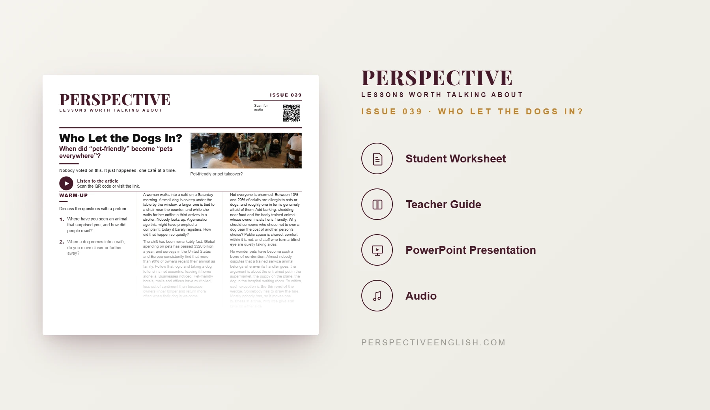

ISSUE 039
Pets ESL Lesson
When did “pet-friendly” become “pets everywhere”?
A C1–C2 ESL lesson debating pets in shared public spaces, service animals, personal responsibility and where society should draw the line.
CHOOSE YOUR LEVEL
Collection 07 includes Issues 036–040.
LESSON PREVIEW

ABOUT THIS LESSON
About This Pets ESL Lesson
Pets are increasingly treated as family members, but the spread of dogs into cafés, supermarkets and other shared spaces raises difficult questions about comfort, allergies and responsibility.
This advanced C1–C2 lesson explores the arguments around pet-friendly businesses, service animals and whose preferences should take priority. Students analyze five idiomatic expressions and consider the implications of quietly changing social boundaries.
Students negotiate dog policies for twelve public places, defend a café policy against objections and write a 200–250 word argument addressing the strongest opposing view.
FROM THE ARTICLE
WHAT'S INCLUDED
What's Included in Who Let the Dogs In??
- Magazine-style C1–C2 ESL student worksheet
- Original advanced-level pets article and matching audio recording
- Five idiomatic expressions and five inference-based true-or-false questions
- Five advanced discussion questions about pets and shared spaces
- Where Is the Line? critical-thinking task: negotiate rules for twelve public places
- Language in Context: turn a blind eye, a bone of contention, draw the line, the thin end of the wedge, and give and take
- Speaking challenge: propose and defend a café pet policy against objections
- 200–250 word opinion writing task addressing the strongest opposing view
- Teacher guide and complete answer key
- Ready-to-use classroom presentation
GET THE COMPLETE LESSON
Ready to Teach Who Let the Dogs In?
Get the complete C1–C2 Pets ESL lesson individually, or save with Perspective Collection 07 featuring Issues 036–040.
Secure checkout and instant digital delivery through Payhip.